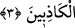

Âşıklar, sürekli elem şarâbını içerler
Acı görürlerse, susup beklerler
Şarâbın zevkinde mahmurluk derdi vardır
Gülün dalında silâha davranmış dikenler vardır
Dostun uğruna olduktan sonra sabır acı gelmez
Zira dostun elinden olan acı şeker kesilir
Onun esiri olan zincirden kurtulmak istemez
Onun avına düşen, kementten kurtulmayı dilemez.
3. Andolsun ki, biz onlardan öncekileri de imtihandan geçirmişizdir. Elbette Allah,
doğruları ortaya çıkaracak, yalancıları da mutlaka ortaya koyacaktır.
“Andolsun ki, biz” gerçekten “onlardan öncekileri de” fitnenin içine atmış ve
“imtihandan geçirmişizdir.” Yâni bu ümmetten önce de diğer peygamberleri ve sâlih
ümmetlerini de aynı şekilde imtihan edip sınamışızdır. Bu husus, bütün ümmetler için
geçerli olup hikmet ve maslahatlar üzerine binâ edilmiş ilâhî kadim bir sünnettir; bu
sebeple aksi düşünülemez. Onlara da bunlara isâbet edenden daha şiddetli fitne ve
meşakkatler isâbet etmişti. Nitekim Allah Teâlâ’nın şu âyeti bu durumu açıkça ortaya
koyar:
“Nice peygamberler vardı ki, beraberinde birçok Allah erleri bulunduğu halde
savaştılar da, bunlar, Allah yolunda başlarına gelenlerden dolayı gevşeklik ve zaaf
göstermediler, boyun eğmediler. Allah sabredenleri sever.” (Âl-i İmran, 3/146)
Yani, bu durum bütün ümmetler için geçerlidir. Her birinin samimiyet ve ihlâsını belâ
mihengi üzerinde denerler.
Hadiste buyrulmuştur ki: “Sizden öncekiler yakalanıp getirilirler; başlarına testere
konur ve ikiye bölünürlerdi. Bu, onları dinlerinden döndüremezdi. Demir taraklarla
kemikleri, etleri ve damarları taranır (parçalanır) ve yine bu, onları dinlerinden
döndüremezdi.”[158]
“Elbette Allah, doğruları ortaya çıkaracak, yalancıları da mutlaka ortaya
koyacaktır.” Yâni Allah’ın ilmi ezelîdir, başı yoktur. O, mahlûkâtı yaratılmadan önce
bildiği gibi, yaratılırken ve yaratıldıktan sonra mevcud iken de bilir.
Âyetin mânâsı şöyledir: Allah’a yemin olsun ki, onlar Allah’ın ilmine göre imtihan
olunacaklardır; ta ki îmanda sâdık olanlarla yalanda devam edenler birbirinden ayrılsın,
sevab ve cezâlarının karşılığı da buna göre düzenlensin.
İşte bu sebepledir ki “(Onları) ayırsın...” veya “(sevap veya cezâlarının) karşılığını
versin...” ifâdelerinin anlamıyla ilgili şöyle denilmiştir: Bâzıları buradaki “ilim”